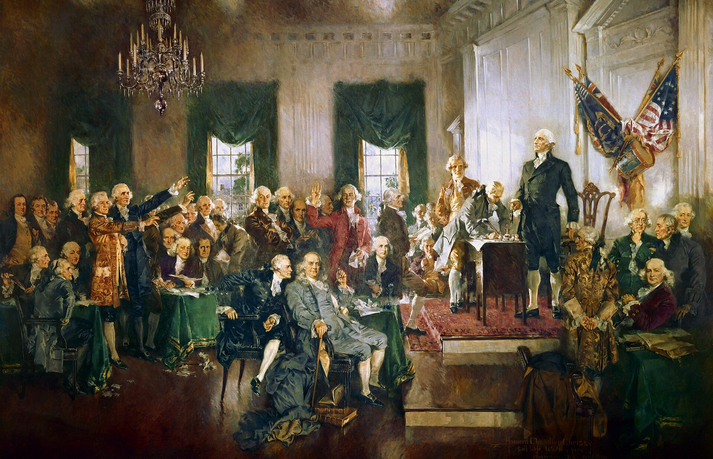

Special: Letter from the Editor
The Fire Behind the Eyes
By Cole Hanna
Opinion
Hi, I'm Dom and I'm stupid
By Dominic Scian
Opinion
Hi, I'm Heath and I'm stupid
By Heath Patullo


A pharmacist who has a sincere religious objection to dispensing a legally prescribed medication refuses to fill a patient's prescription. No other pharmacy is nearby; if the pharmacist does not dispense the prescription, the patient canont easily receive the care they need. Whose conscience takes priority, and why?
Respond Here